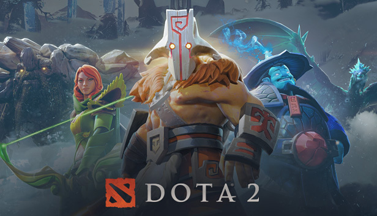

Um de meus jogos preferidos e formado por 2 times de 5 pessoas que se enfremtam para destruir a base inimiga. DotA 2 é o MOBA da Valve, empresa dona da Steam, baseado em um antigo mod de Warcraft 3, o Defense of the Ancients (DotA) no qual os jogadores devem se enfrentar online em acirradas batalhas entre equipes.
